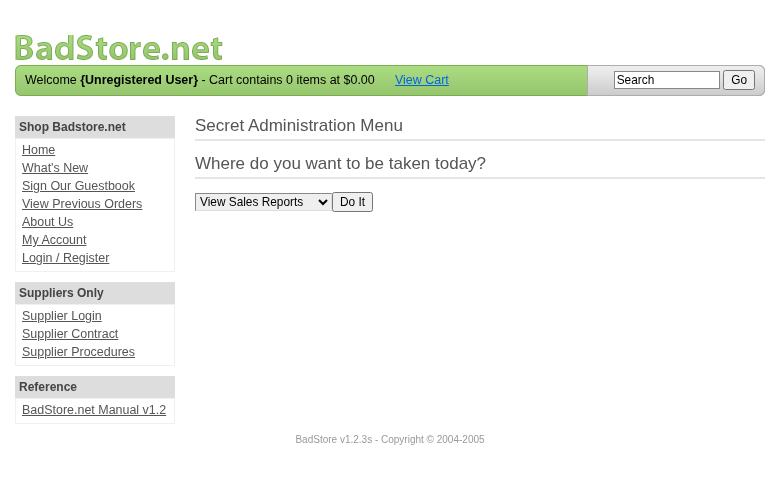
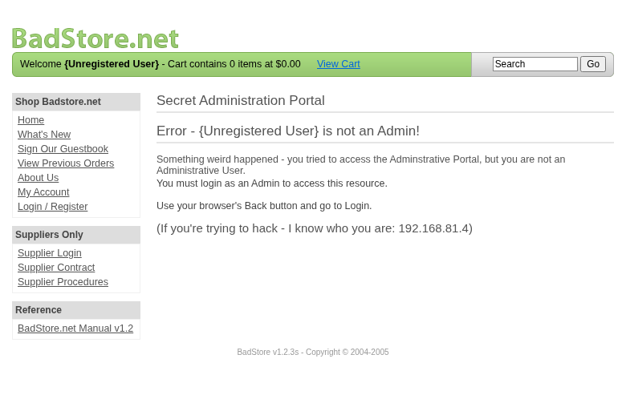
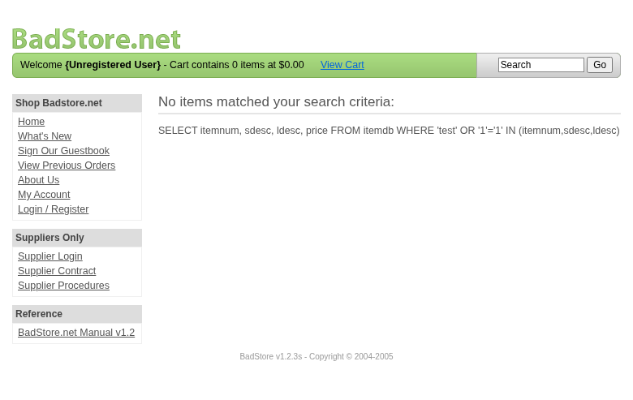

Scope
OpenHack Security Agent was engaged by
Richard Roe to conduct an external IT security
investigation. The subject of the investigation was the “BadStore.net
v1.2.3s”.
The test was performed using a local instance of the application at
http://localhost:3336 in a dedicated test environment..
Objective
The objective of the IT security investigation was to identify vulnerabilities and security gaps which, in the event of misuse, would have an impact on the availability, integrity and confidentiality of the defined applications and/or systems and the data processed on them. The result of this project is a report that contains a management summary of all relevant findings and a compilation of recommended measures.
The technical IT security audit is not a substantive audit effort to ensure that all vulnerabilities and security gaps existing at the time of the audit are identified. There is a possibility that established safeguards will effectively prevent identification and exploitation of vulnerabilities and security gaps. The client acknowledges that this is not an indicator of deficiencies in engagement performance and that additional unidentified vulnerabilities and security gaps may exist.
Document Status
| Title | Security Assessment Report |
| Document Owner | OpenHack Security Agent |
| Classification | Strictly Confidential |
| Project Timeframe | 2026-02-26 |
Version History
| Version | Date | State | Author | Comments |
|---|---|---|---|---|
| 0.1 | 2026-02-26 | Draft | Jane Doe | – |
| 1.0 | 2026-02-26 | Final document | Jane Doe | – |
Contact Persons - Assessor
| Name | Role | Phone | |
|---|---|---|---|
| Jane Doe | Lead Security Consultant | +1 555 123 4567 | jane.doe@openhack.sec |
| John Smith | Security Consultant | +1 555 234 5678 | john.smith@openhack.sec |
Contact Persons - Client
| Name | Role | Phone | |
|---|---|---|---|
| Richard Roe | Project Lead | +1 555 345 6789 | spam@badstore.net |
OpenHack Security Agent (hereinafter referred to as
“ASSESSOR”) has been commissioned by Richard Roe
(hereinafter referred to as “CLIENT”) to carry out a penetration
test.
The penetration test of the BadStore.net v1.2.3s
application took place on 2026-02-26.
For this purpose, the web application, accessible at
http://badstore:80, was tested from the perspective of an
external attacker.
As part of the test, a total of 3 vulnerabilities were identified: 2 critical, 0 high, 1 medium, 0 low, and 0 informational.
Critical: 2 | High: 0 | Medium: 1 | Low: 0 | Informational: 0 | Total: 3
| Severity | Count | ||
|---|---|---|
| 2 | ||
| 0 | ||
| 1 | ||
| 0 | ||
| 0 | ||
| Total | 3 | |
A description of the scope and test environment can be found in Chapter 3. Chapter 4 presents the risk assessment methodology. Chapter 5 provides a summary of findings. Chapter 6 contains the detailed technical descriptions of the findings including remediation measures.
It is recommended that the remediation of the critical risk vulnerabilities be treated with the highest priority and countermeasures implemented as soon as possible. The vulnerabilities with high and medium risk should also be remedied in the short term. The low-risk vulnerabilities should be treated with lower priority due to their reduced risk, but should still be addressed.
The scope for the assessment was the following targets:
The security penetration test of the BadStore.net v1.2.3s took place on 2026-02-26.
The web application was tested for security vulnerabilities across the following categories. This can be considered a guideline as penetration tests are a creative process and therefore the tests are not limited to what is given here. The base of these categories is the OWASP Top 10 for Web, which is fully covered by this penetration test approach.
| Category | Description |
|---|---|
| Broken Access Control | Users can act outside their permissions, leading to unauthorized viewing, modification, or deletion of data. |
| Security Misconfiguration | Systems or cloud services are insecurely configured, e.g., through default passwords or unnecessarily enabled features. |
| Software Supply Chain Failures | Vulnerabilities arise from compromised third-party code, libraries, or build pipelines. |
| Cryptographic Failures | Sensitive data is exposed through missing, weak, or incorrectly implemented encryption. |
| Injection | Attackers inject malicious commands (e.g., SQL or shell code) through input fields that the system erroneously executes. |
| Insecure Design | Fundamental architectural flaws that exist before implementation make an application inherently insecure. |
| Authentication Failures | Flaws in identity verification allow attackers to take over sessions or guess passwords (brute force). |
| Software or Data Integrity Failures | Lack of verification of code or data sources leads to acceptance of untrusted updates or serialization data. |
| Security Logging & Alerting Failures | Attacks go undetected or responses are delayed due to missing logs or absent alert notifications. |
| Mishandling of Exceptional Conditions | Programs respond inadequately to unforeseen situations, which can lead to crashes or logic errors. |
During the test, the following restrictions or events occurred that may have affected the scope or depth of the assessment:
The risk assessment of the vulnerabilities found is performed using the industry standard Common Vulnerability Scoring System v3.1 (hereinafter referred to as “CVSS”). This is a standard that can be used to uniformly assess the vulnerability of computer systems and the severity of security vulnerabilities. This makes it possible to compare vulnerabilities more effectively.
The Common Vulnerability Scoring System has a metric structure and is based on values that are divided into three groups: “Base”, “Temporal”, and “Environmental”. To determine the vulnerability scores, each group has its own rules. The values of the Base group are invariant in time and remain the same in different environments. In the Temporal group, the time dependency of a vulnerability is taken into account. For example, the vulnerability of a system to a particular vulnerability decreases over time as more and more countermeasures such as patches become known and available. The Environmental group incorporates various criteria of the specific IT environments into the vulnerability rating.
The CVSS ratings are numerical values on a scale of 0.0 to 10.0, with the highest vulnerability of a system occurring at a value of 10.0. Our rating is based on the Base Metrics (Base Score) and is composed of:
As penetration testers, we can only assess the general threats posed by a vulnerability through Base Metrics. However, we have no insight into the internal structures of our clients. Therefore, the assessment of the specific risks for the client’s systems and business processes must be done by the client. For this purpose, CVSS offers Environmental Metrics. This makes it possible to subsequently adjust the CVSS score of vulnerabilities after the test result has been submitted before they are remedied. This changes the assessment of the risk and thus the urgency of remediation of a vulnerability. For more information, see CVSS v3.1 Specification.
The risk categories used in this report reflect the recommended priority for addressing the vulnerabilities identified during the penetration test. The categorization is based on the probability of exploitation and the significance of the impact. The risk value is calculated using the CVSS v3.1 standard:
| Assessment | Risk Category Description |
|---|---|
| Critical vulnerabilities that allow an attacker to gain full access to the object under test and its sensitive information. It is possible to cause enormous damage to the client’s reputation. Furthermore, these vulnerabilities may allow attackers to gain wide-ranging privileges, including to other systems or applications of the client that have not been investigated in detail within the scope of this project. Exploitation of the vulnerabilities is not prevented and can be reproduced with medium to low effort. | |
| Vulnerabilities that may allow an attacker to manipulate sensitive data, damage the client’s reputation, gain unauthorized access to sensitive information, or gain unauthorized access to applications or the client’s infrastructure. The vulnerabilities are reproducible with medium to high effort. | |
| Vulnerabilities that may allow an attacker to harm the client’s reputation or gain unauthorized access to client data. The privileges that an attacker can gain by exploiting the vulnerabilities are limited. | |
| Security vulnerabilities that do not pose a threat in themselves, but which, for example, provide attackers with useful information about the network and systems. These vulnerabilities allow an attacker only very limited access. | |
| Anomalies such as functional limitations or inconsistencies. These do not currently represent a risk and have no negative impact on the test object. Accordingly, no action is required. Nevertheless, countermeasures can be helpful for the functional and safety improvement of the test object. If necessary, this may give rise to risks under other circumstances. |
The vulnerabilities can be in one of the following states:
| Id | Finding Name | Risk Assessment | CVSS v3.1 Score |
|---|---|---|---|
| 01 | Broken Function Level Authorization (BFLA) - Unauthenticated Admin Portal Access | 5.3 | |
| 02 | SQL Injection in Search Functionality | 9.1 | |
| 03 | Stored Cross-Site Scripting (XSS) in Guestbook | 9.3 |
| Severity | |
| CVSS Base Score | 5.3 (CVSS:3.1/AV:N/AC:L/PR:N/UI:N/S:U/C:L/I:N/A:N) |
| Assets | http://badstore:80/cgi-bin/badstore.cgi?action=admin, http://badstore:80/cgi-bin/badstore.cgi?action=adminportal |
| Status | open |
Description
The administrative portal at /cgi-bin/badstore.cgi?action=admin is accessible without any authentication. While sensitive functions require admin credentials to execute, the portal interface itself and all available admin functions are exposed to unauthenticated users. This allows attackers to:
Reproduction Steps: 1. Navigate to http://badstore:80/cgi-bin/badstore.cgi?action=admin as an unregistered user 2. Observe that the ‘Secret Administration Menu’ is displayed without requiring login 3. Select any admin function (e.g., ‘Backup Databases’) and click ‘Do It’ 4. The request is sent to /cgi-bin/badstore.cgi?action=adminportal 5. Error message reveals the internal IP address: ‘(If you’re trying to hack - I know who you are: 192.168.81.4)’
Root Cause: Missing authentication check on the admin portal entry point. The application only validates admin privileges when executing functions, not when accessing the admin interface.
Proof of Concept
Not provided
Remediation
Implement authentication checks at the admin portal entry point (/cgi-bin/badstore.cgi?action=admin) before displaying any administrative interface or functionality. Redirect unauthenticated users to the login page.
Evidence


| Severity | |
| CVSS Base Score | 9.1 (CVSS:3.1/AV:N/AC:L/PR:N/UI:N/S:U/C:H/I:H/A:N) |
| Assets | http://badstore:80/cgi-bin/badstore.cgi?action=search |
| Status | open |
Description
The search functionality at /cgi-bin/badstore.cgi is vulnerable to SQL injection through the ‘searchquery’ parameter. The application directly concatenates user input into SQL queries without proper sanitization or parameterization.
Vulnerability Details: - Location: /cgi-bin/badstore.cgi?action=search&searchquery={payload} - Database: MariaDB (MySQL) - Query Structure Revealed: SELECT itemnum, sdesc, ldesc, price FROM itemdb WHERE {user_input} IN (itemnum,sdesc,ldesc)
Confirmed Attack Vectors:
test'test' OR '1'='1 - Returns all
itemstest' AND '1'='2 - Returns no
itemsImpact: - Unauthorized data access to all database contents - Potential authentication bypass - Data manipulation or deletion - Complete database compromise possible
Proof of Concept:
# Error-based (reveals database info)
http://badstore:80/cgi-bin/badstore.cgi?action=search&searchquery=test'
# Boolean-based blind (manipulates query logic)
http://badstore:80/cgi-bin/badstore.cgi?action=search&searchquery=test' OR '1'='1Proof of Concept
Not provided
Remediation
Use parameterized queries/prepared statements for all database interactions. Never concatenate user input directly into SQL queries. Implement proper input validation and sanitization.
Evidence
SQL injection error message revealing MariaDB database and query structure: images/finding-2b2b1500-cf2c-4e1b-a924-b97449480274-4-sqli-test-apostrophe.txt
SQL query disclosure showing full query structure and table schema

| Severity | |
| CVSS Base Score | 9.3 (CVSS:3.1/AV:N/AC:L/PR:N/UI:R/S:C/C:H/I:H/A:N) |
| Assets | http://badstore:80/cgi-bin/badstore.cgi?action=guestbook, http://badstore:80/cgi-bin/badstore.cgi?action=doguestbook |
| Status | open |
Description
The guestbook functionality is vulnerable to stored Cross-Site Scripting (XSS) attacks. User input in the ‘name’ and ‘comments’ fields is stored and rendered without proper sanitization or output encoding, allowing malicious scripts to execute in the browsers of all users who view the guestbook.
Vulnerability Details: - Location: /cgi-bin/badstore.cgi?action=guestbook (POST to /cgi-bin/badstore.cgi?action=doguestbook) - Affected Fields: name, comments - Type: Stored XSS
Confirmed Attack Vectors:
<script>alert('XSS-Name')</script><svg onload=alert('XSS-Comments')>Evidence from Page Source:
<b><script>alert('XSS-Name')</script></b>
<ol><i><svg onload=\"alert('XSS-Comments')\"></svg></i></ol>Impact: - Session hijacking via cookie theft - Keylogging and credential harvesting - Defacement of the guestbook - Drive-by malware distribution - Phishing attacks targeting site visitors - All users viewing the guestbook are affected
Proof of Concept: 1. Navigate to
http://badstore:80/cgi-bin/badstore.cgi?action=guestbook 2. Enter
<script>alert('XSS-Name')</script> in the Name
field 3. Enter <svg onload=alert('XSS-Comments')> in
the Comments field 4. Click ‘Add Entry’ 5. Alerts execute immediately
confirming XSS 6. All subsequent visitors to the guestbook will execute
the malicious scripts
Proof of Concept
Not provided
Remediation
Implement strict output encoding for all user-supplied data. Use HTML entity encoding for content displayed in HTML context. Consider using a Content Security Policy (CSP) and a library like DOMPurify for sanitization.
Evidence
| Abbreviation | Description |
|---|---|
| API | Application Programming Interface |
| CAPTCHA | Completely Automated Public Turing test to tell Computers and Humans Apart |
| CVSS | Common Vulnerability Scoring System |
| FTP | File Transfer Protocol |
| IDOR | Insecure Direct Object Reference |
| MD5 | Message-Digest Algorithm 5 |
| OAuth | Open Authorization |
| ORM | Object-Relational Mapping |
| OWASP | Open Web Application Security Project |
| PII | Personally Identifiable Information |
| SQL | Structured Query Language |
| TOTP | Time-based One-Time Password |
| URI | Uniform Resource Identifier |
| WAF | Web Application Firewall |
+—————-+———————————————+